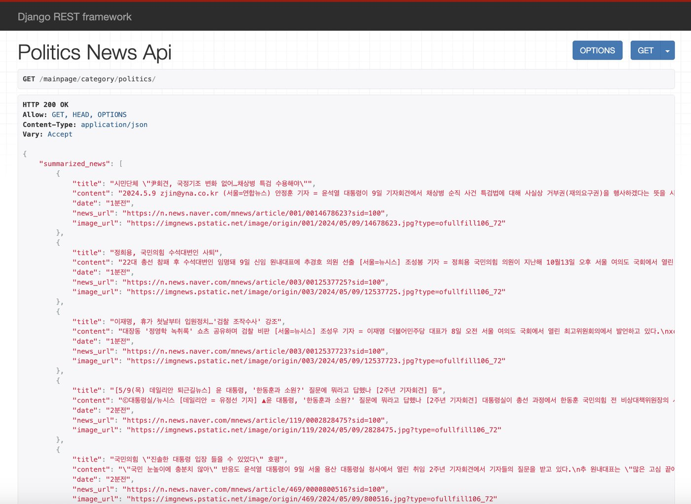

LLM API 연동, 백엔드, 팀
AI 뉴스 요약 서비스 Snap News
네이버 헤드라인 뉴스를 크롤링해 OpenAI API로 두 문장 요약, REST API로 제공하는 웹 서비스
| 기간 | 2024 1학기 |
|---|---|
| 형태 | 3인 팀, 백엔드와 DB 담당 (동국대 오픈소스소프트웨어프로젝트) |
| 기술 | Python, Django REST Framework, OpenAI API, BeautifulSoup, MySQL, Amazon RDS, React |
| 코드 | github.com/suipizza/2024-1-OSSProj-SNAPNEWS |
문제
- 포털 뉴스는 기사마다 들어가 읽어야 해서 주요 뉴스를 빠르게 훑기 어려움
요약 파이프라인 (담당)
- 네이버 뉴스 정치, 경제, 사회 섹션에서 헤드라인 5건씩 크롤링, 본문과 기자, 날짜 추출
- 본문의 공백, 줄바꿈, 특수문자 정리 후 OpenAI API(gpt-3.5-turbo)에 "한국어 2문장 이내" 요약 요청
- 카테고리별 REST 엔드포인트로 제목, 요약, 원문 링크, 이미지, 기자, 날짜를 JSON으로 응답
요약 방식 교체
- 초기의 Gensim 추출 요약은 전체 문장 중 일정 비율만 잘라 내는 방식이라 기사 길이에 따라 요약 품질 차이가 큼
- OpenAI API로 교체하고 프롬프트로 언어와 길이를 지정해 요약 결과를 일정하게 맞춤
회원, 북마크와 DB
- 회원가입, 로그인, 기사 북마크 API 설계와 구현 (사용자별 저장 목록)
- DB를 로컬 MySQL에서 Amazon RDS로 옮겨 팀원 모두 같은 DB를 쓰도록 구성
협업
- 요구사항 정의서와 API 명세서를 먼저 맞춘 뒤 개발
- GitHub에서 개인 브랜치로 작업하고 PR로 main에 합치는 방식으로 협업
화면과 구성


AI 활용생성형 AI로 코드 작성과 오류 수정